现在我们来完成论坛设计的最后一步——页面的设计。我们使用 Semantic UI 进行开发，最终效果图如下：
注册页
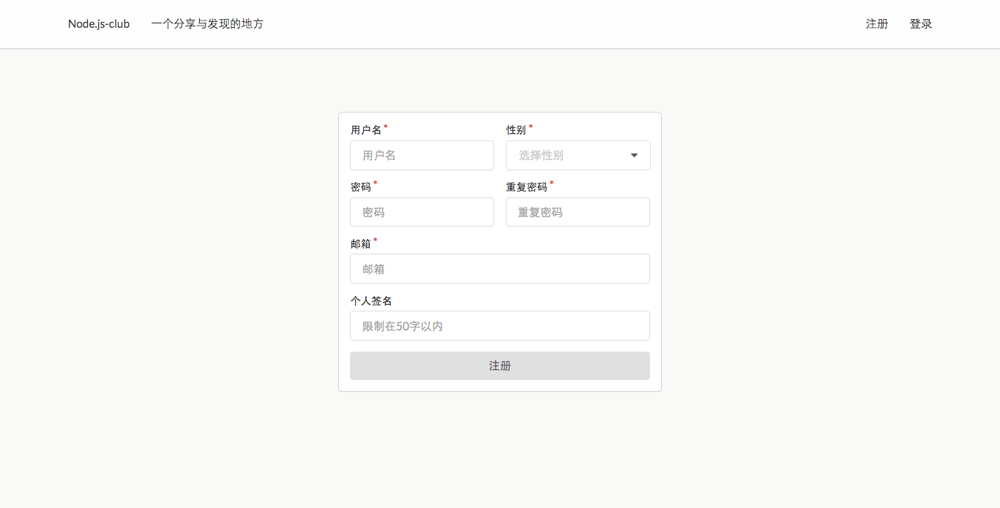
登录页
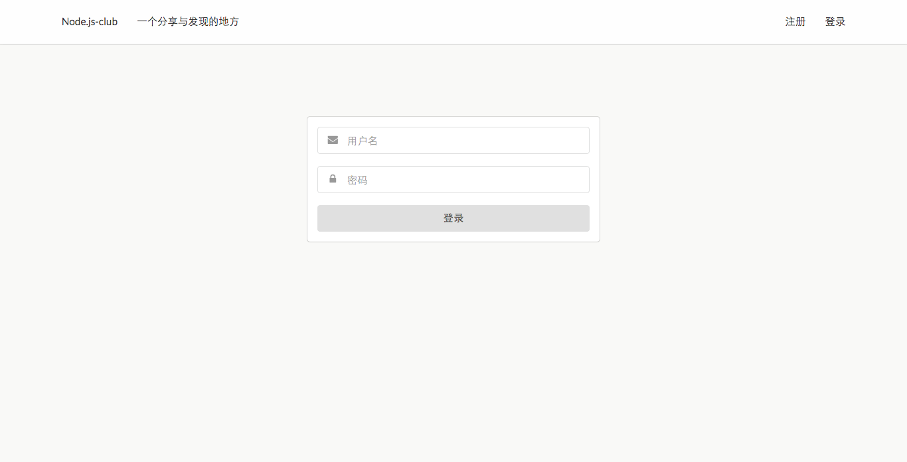
发表话题页

登录后的话题页
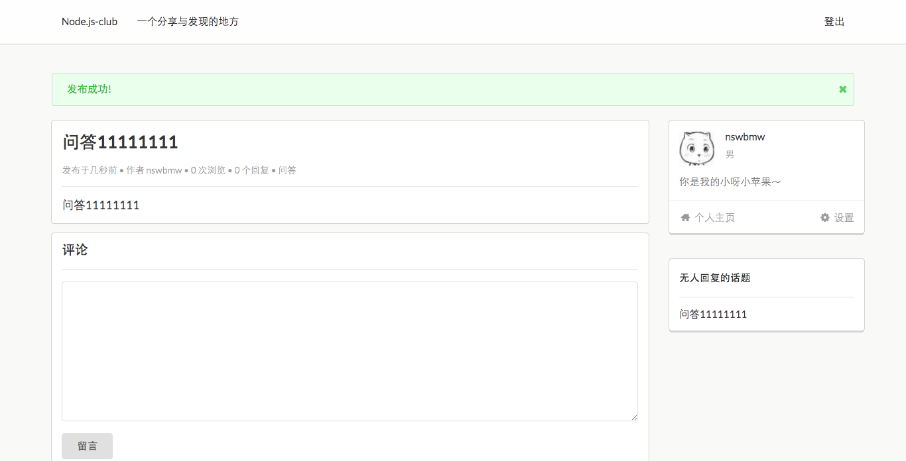
未登录时的话题页
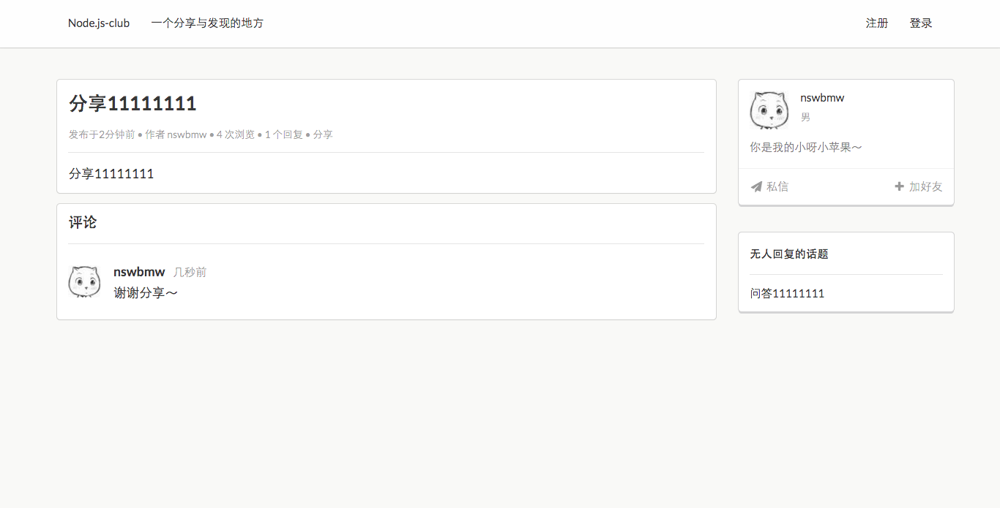
未登录时的主页
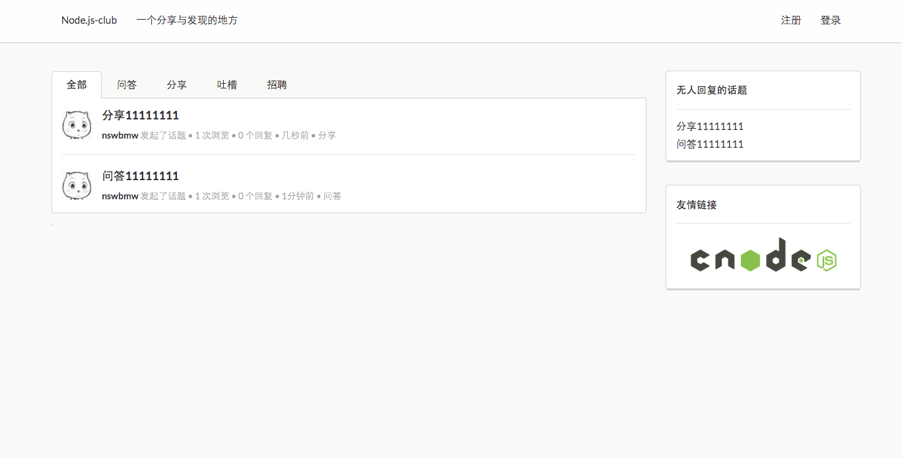
登录后的主页
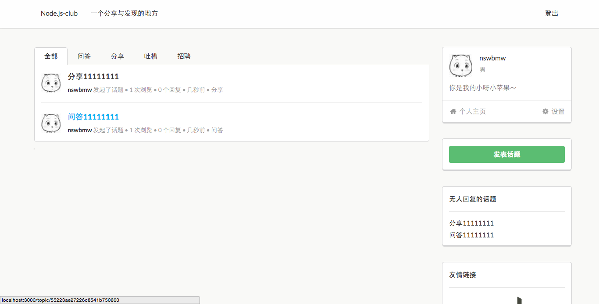
版块
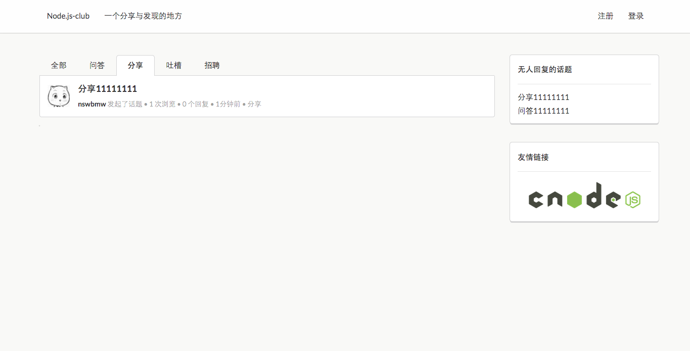
用户主页
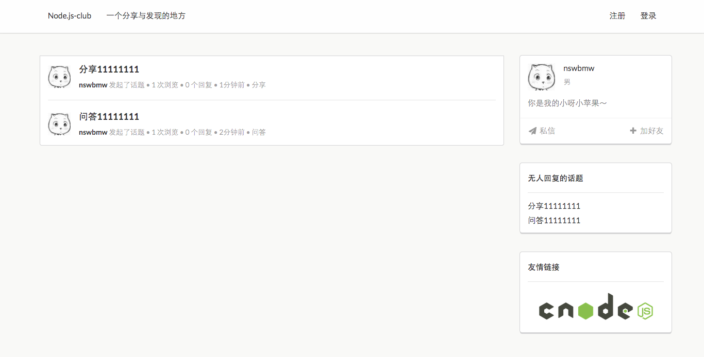
分页
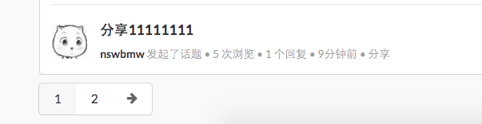
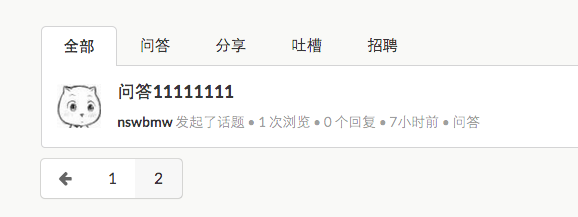
我们将页面划分成许多小而可重用的视图片段，如右侧个人信息的卡片 userCard.ejs，无人回复的话题的卡片 noReplyCard.ejs，友情链接的卡片 linkCarde.js，发表话题那个绿色按钮的卡片 createCard.ejs，标签视图片段 tab.ejs，分页视图片段 pagination.ejs，以及主页及用户页都用到的展示话题列表的 list.ejs。最终，构建 theme 目录如下：
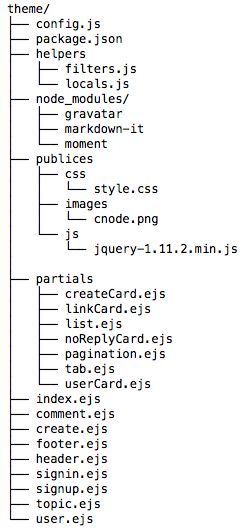
其中，config.js 保存了 co-ejs 的配置：
config.js
module.exports = {
root: __dirname,
layout: false,
viewExt: 'ejs',
cache: true,
debug: false,
filters: require('./helpers/filters'),
locals: require('./helpers/locals')
};
我们扩展了 package.json 并保存了主题的相关信息：
package.json
{
"name": "Node.js-club",
"version": "0.0.1",
"description": "一个分享与发现的地方",
"locale": "zh-cn",
"tabs": ["全部", "问答", "分享", "吐槽", "招聘"],
"dependencies": {
"gravatar": "1.1.0",
"moment": "2.9.0",
"markdown-it": "4.0.3"
}
}
helpers/filters.js 保存了自定义的过滤器函数，这里我们导出了三个函数分别用于格式化时间、根据 email 计算 gravatar 头像以及 markdown 格式转换：
filters.js
var gravatar = require('gravatar');
var moment = require('moment');
var md = require('markdown-it')();
var pkg = require('../package');
moment.locale(pkg.locale);
module.exports = {
get fromNow () {
return function (date) {
return moment(date).fromNow();
};
},
get gravatar () {
return gravatar.url;
},
get markdown () {
return function (content) {
return md.render(content);
};
}
};
helpers/locals.js 保存了自定义的本地变量，用于模板的渲染，其中 $app 保存了 package.json 中的数据：
locals.js
var app = require('../package');
module.exports = {
get $app () {
return app;
}
};
最后，修改根目录下的 package.json，在 scripts 字段添加：
"preinstall": "cd theme && npm install"
并 npm install 安装主题所依赖的模块。